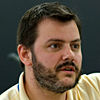

About
Contents |
The mission of SBGN project is to develop high quality, standard graphical languages for representing biological processes and interactions. Each SBGN language is based on the consensus of the broad international SBGN community of biologists, curators and software developers.
Over the course of its development many individuals, organizations and companies made invaluable contributions to the SBGN through participating in discussions and meetings, providing feedback on the documentation and worked examples, adopting the standard and spreading the word.
Regardless of your experience or involvement level, we value your ideas and feedback.
For reporting issues, suggesting enhancements or requesting features please use the dedicated trackers on SourceForge.net.
For general discussions about SBGN: please join the sbgn-discuss mailing list (see the SBGN Mailing Lists page) and bring up the topic there.
For specific questions about this website, workshops, or other SBGN resource management topics: please send a message to the sbgn-editors mailing list (see the SBGN Mailing Lists page).
SBGN meetings and workshops provide the best environment for learning about the process and getting involved. Please check the Events page for the upcoming events.
The SBGN Editors work towards distilling discussions and requests into coherent specification documents, addressing comments and questions, correcting errata, and generally managing revisions to the SBGN specifications. The editors do not decide what to put in the specifications—they are the voice and the hand of the community.
The SBGN editors are elected by the community for 3-year terms as volunteers. There is no limit on the number of terms one can serve as an editor. An serving editor, however, cannot stand for election thereby forcing a gap year between two successive terms.
| Current editors: | ||
|---|---|---|
| Robin Haw (elected in 2014) | Nicolas Le Novère (elected in 2015) | Augustin Luna (elected in 2014) |
| Alexander Mazein (elected in 2015) | Huaiyu Mi (elected in 2013) |
{kind=link}
{kind=link}
{kind=link}
| Former editors: | ||
|---|---|---|
|  | ||
| Tobias Czauderna (January 2012 to December 2015) | Emek Demir (January 2010 to December 2012) | Nicolas Le Novère (September 2008 to December 2012) |
| Huaiyu Mi (also March 2009 to December 2011) | Stuart Moodie (September 2008 to December 2011, September 2012 to December 2015) | Falk Schreiber (September 2008 to December 2010 and January 2012 to December 2014) |
| Alice Villéger (January 2011 to December 2013) | Anatoly Sorokin (September 2008 to December 2009 and January 2012 to December 2014) |
{kind=link}
{kind=link}
{kind=link}
{kind=link}
{kind=link}
{kind=link}
{kind=link}
The duties of the SBGN Scientific committee are to help securing the financial support for SBGN development, to advocate the use of the language in their community, and to check that the development of SBGN is harmonious and democratic. The scientific committee does not have any decision-making power on the content of SBGN, although its advices presumably weight much in the decisions taken by the community.
Principal investigators of grants supporting SBGN development and maintenance are entitled to become members. Other memberships are proposed by the running Scientific Committee and the Editorial Board. Invited members may be pioneers or major players in the field of graphical representation of knowledge, or leading figures in fields that may endorse SBGN. New memberships require unanimity of expressed opinions from current members. The terms of invited members are yearly, renewable without restriction. Renewal must be proposed and seconded by existing members of scientific committee.
| Current members: | |||
|---|---|---|---|

| 
| ||
| Gary D. Bader, member invited in 2010. (Ph.D. Biochemistry) Works on biological network analysis and pathway information resources as an Assistant Professor at The Donnelly Centre at the University of Toronto. He has been involved in leading development of protein interaction and pathway databases and standards, including the BioPAX biological pathways exchange language. | Igor Goryanin, SBGN PI joined in 2009. | Michael Hucka member invited in 2009. (Ph.D. in Computer Science and Engineering) Senior Research Fellow at Caltech. He has chaired the SBML effort by community consensus since 2003. Today he works on all aspects of SBML and is involved with BioModels.net activities. | |

| |||
| Hiroaki Kitano, SBGN PI joined in 2009. | Paul Thomas member invited in 2011.(Ph.D.) Associate Professor of Preventive Medicine (Chief, Division of Bioinformatics) and Biology, University of Southern California, Los Angeles. Works on the evolution of gene function and biological systems, and is a PI of the Gene Ontology project. | Falk Schreiber, SBGN PI joined in 2013. |
{kind=link}
{kind=link}
Kurt Kohn was an invited member between 2009 and 2010. Nicolas Le Novère was a PI and invited member between 2009 and 2015
We are deeply indebted to the many funding agencies and organizations that have supported SBGN over the years.
The development of SBGN during 2005–2008 was mainly supported by a grant from the Japanese New Energy and Industrial Technology Development Organization (NEDO). The principal investigators were Hiroaki Kitano, Akira Funahashi, Nicolas Le Novère, and Michael Hucka.
The Okinawa Institute of Science and Technology (OIST), the British Biotechnology and Biological Sciences Research Council (BBSRC) through a Japan Partnering Award, and a US Partnering Award, the European Media Laboratory (EML Research GmbH), the Beckman Institute BNMC at the California Institute of Technology, and US National Science Foundation (NSF) provided additional support for SBGN workshops.
No one—not the principal investigators, nor the SBGN Editors, nor the members of the SBGN Scientific Committee, nor the funding agencies or anyone else—owns SBGN; it is a free and open community effort that extends beyond any single group, and we view ourselves only as organizers and fellow developers.